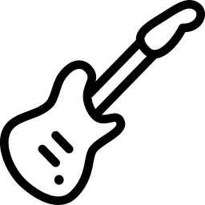

Ces boutons changent l’octave. Le 2e sera plus aigu.Ces boutons changent l’instrument.Ce curseur modifie le volume du son.Les boutons "Start", "Stop" et "Play"
permettent d'enregister ce qu'on joue :
- Start : Jouez votre morceau.
- Stop : Stoppez votre morceau.
- Play : Écoutez votre morceau.
Le rectangle noir permet d'avoir un metronome.
Pour le mettre en place :
- Mettez une valeur comprise entre 1 et 999.
- Appuyez sur entrée.
- Cochez la case pour que le metronome s'enclenche.
Vous pouvez l’arrêter en décochant la case à tout moment.